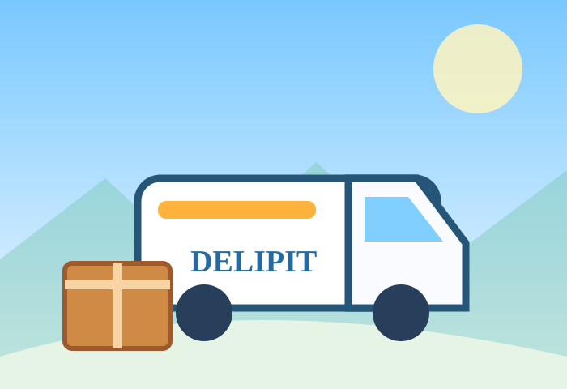
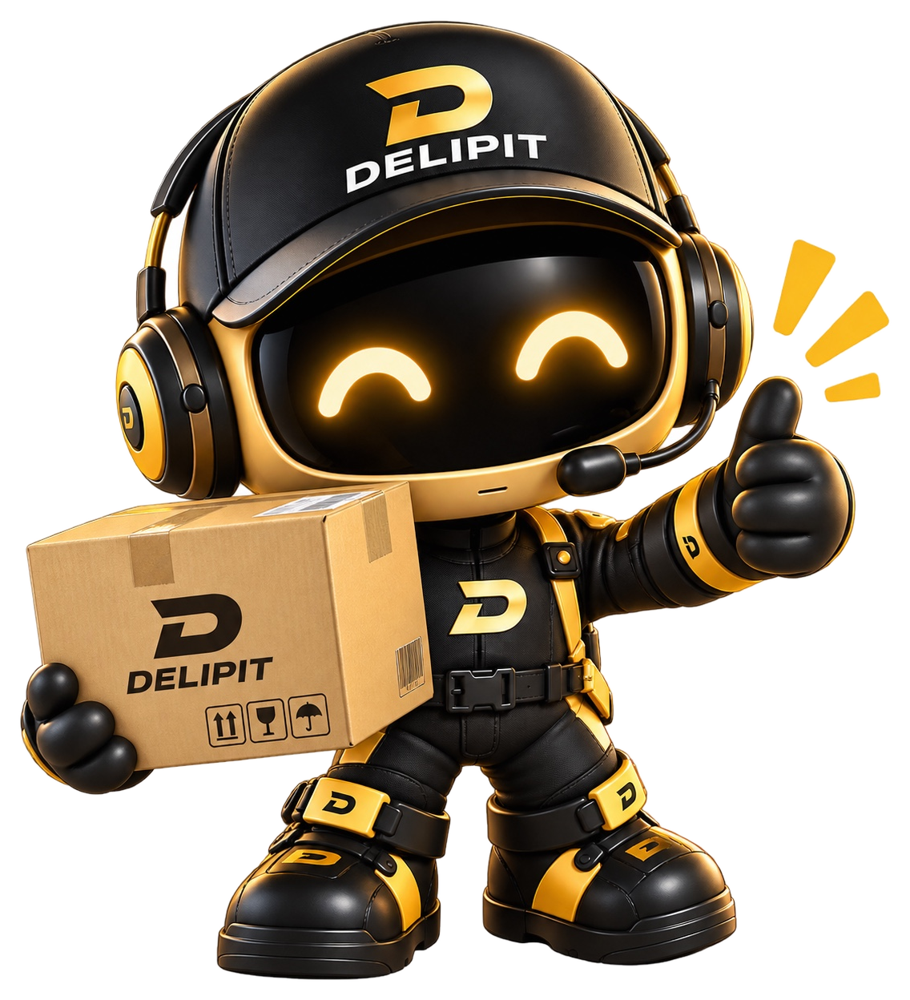
「何から始める？」を、イラストと短い説明で一緒に確認しよう！
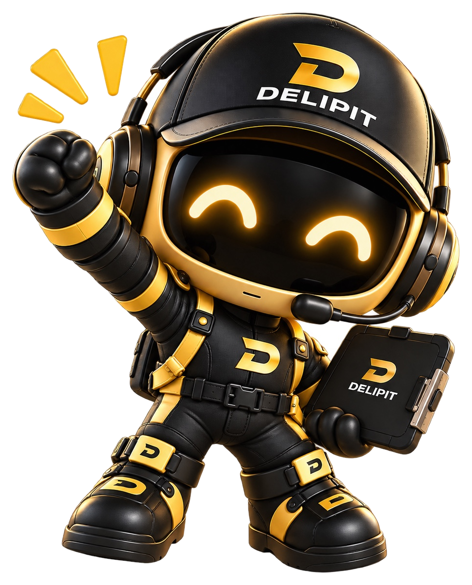
上から順に見れば、何を準備するのかが分かるよ。詳しい条件は各ステップの「詳細」で確認してね。


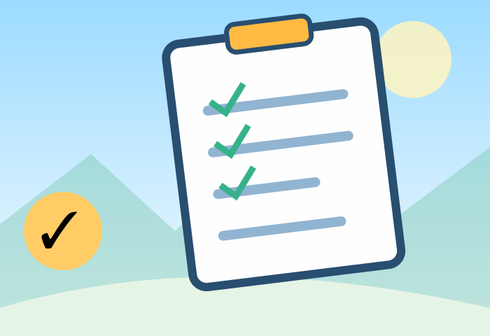
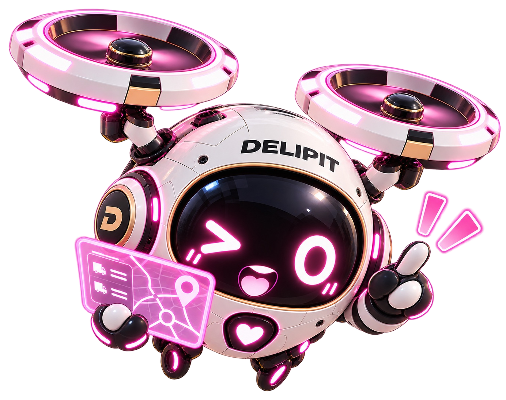
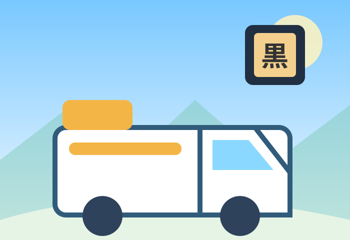
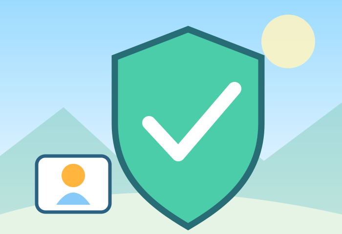
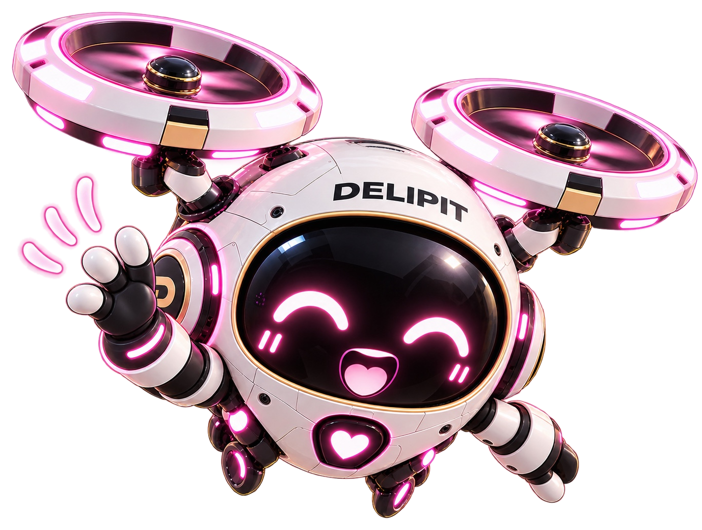
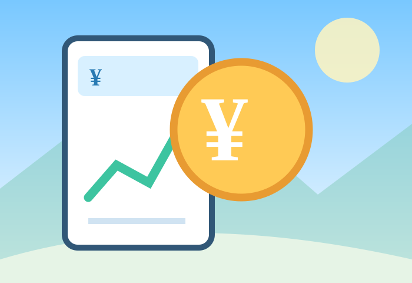
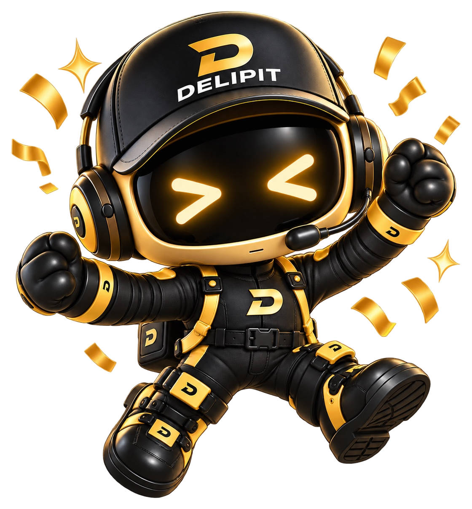
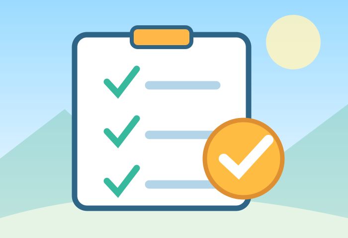
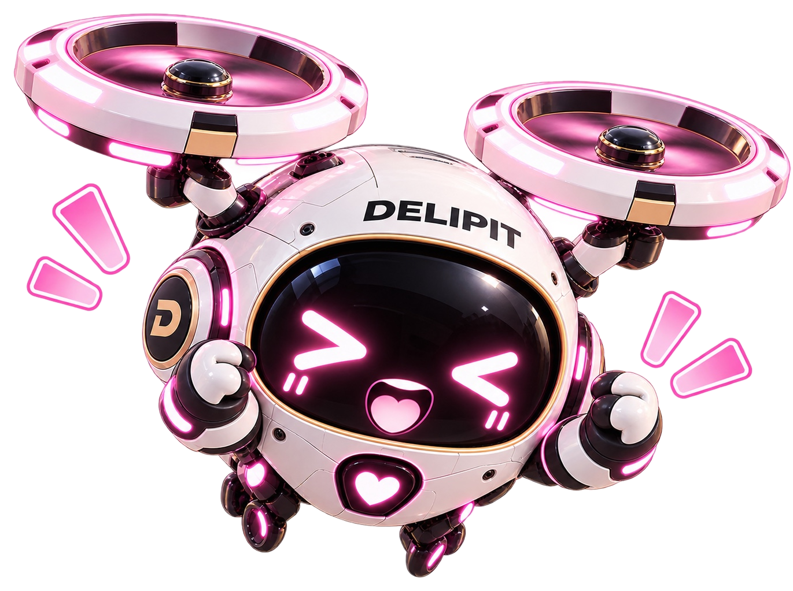
「軽貨物の仕事を始めたいけれど、何から準備すればいい？」という人向けの案内です。仕事内容を知るところから、初めて配送する前の準備まで、順番に整理しました。
仕事の内容と契約条件を確認し、車両・事業の届出・安全管理・税務の準備を進めます。必要な手続きが済んだことを確認してから稼働しましょう。
※これは一般的な流れです。個別の手続きは車両・契約形態・届出状況によって異なります。
宅配・企業配・ルート配送。仕事内容と報酬の違いを知ろう。
軽貨物の仕事には、個人宅への宅配、企業への配送、決まったルートの配送、単発の配送などがあります。仕事によって必要な時間、荷物の大きさ、報酬の決まり方が異なります。
まずは仕事内容を具体的に確認し、自分の生活に合うか考えましょう。
単価だけでなく、控除・責任・解約条件までチェック。
提示された報酬が、そのまま生活に使えるお金になるわけではありません。手数料や車両費用などが差し引かれる場合があります。
事業用車両と必要な届出を確認して準備。
事業用の軽貨物自動車で有償運送を始める場合、一般に「黒ナンバー」と呼ばれる事業用ナンバーの取得に向け、貨物軽自動車運送事業の届出などを進めます。
車両の状態や届出内容で必要書類・手続きが変わる場合があります。具体的な提出先や順番は、管轄の運輸支局・軽自動車検査協会で確認してください。
点呼・日常点検・記録など、安全に働くための準備。
軽貨物の安全管理は、個人事業主にも関係します。2025年4月に始まった安全対策の強化では、貨物軽自動車安全管理者、点呼、業務記録などの制度が重要です。
新規届出と既存事業者では経過措置が異なることがあります。詳しくは安全管理ガイドと国土交通省の最新案内を確認してください。
売上・経費・税務の手続きを分けて考えよう。
運輸支局で行う運送事業の届出と、税務署で行う税務手続きは別です。個人事業の開業に関する届出、青色申告の承認申請、帳簿や領収書の保存方法を確認します。
この2つは提出期限が違います。開業時期や個別事情によって扱いが変わる場合があるため、必ず国税庁の最新案内で確認してください。
インボイス登録はすべての個人事業主に一律必須というわけではありません。契約条件と税負担を確認して判断してください。売上・経費・手取りの説明を見る →
集合場所、配達ルール、連絡先を最終確認。
初日は速さより正確さを優先。現場ごとのルールは担当者に確認しておきましょう。
現場の実体験を知りたい人は、配送の一日は荷物を積む前から始まっているも参考にしてください。
黒ナンバー：事業用の軽自動車につけるナンバープレートの通称。
個建て：配達した荷物の個数などに応じて報酬を計算する方式。
業務委託：雇用契約とは異なり、契約で定めた業務を引き受ける働き方。実際の法的な扱いは契約書の名称だけで決まるものではありません。
インボイス：消費税の仕入税額控除に関係する適格請求書の制度。
制度の改正や提出書類の変更があり得ます。以下の公的資料と管轄窓口の最新案内を確認してください。
この記事は制度の概要と準備の考え方をまとめたもので、個別の法的・税務判断を代行するものではありません。